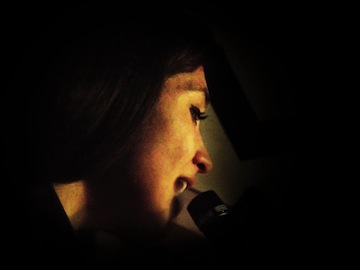

<div class="modal-dialog">
    <div class="modal-content">
        <div class="modal-header">
            <button type="button" class="close" data-dismiss="modal" aria-hidden="true">
                
                <span class="glyphicon glyphicon-remove"></span>
            </button>
            <h3 class="modal-title">Il gruppo</h3>
            <div class="modal-body">
                <div class="text-center">
                    
                    <div class="caption text-center"><b>iMusicalia</b></div>
                </div>
                <hr>
                <p>
                <div class="pull-right">
                    
                    <div class="caption text-center"><b>Carlo Ciervo</b></div>
                </div>
                "Negli anni Ottanta del secolo scorso l’onda lunga del folk revival campano trova una fertile incarnazione
                nei beneventani Musicalia, nati intorno ai fratelli Amerigo e Marcello Ciervo, già protagonisti con il Collettivo di Ricerca
                Musicale del Sannio. Il loro lavoro a tutto campo mette insieme rappresentazioni teatrali ispirate ai rituali carnevaleschi,
                rilettura di materiali tradizionali, musica d’autore che riprende soprattutto espressioni dell’area sannitica e caudina.
                </p>
                <p>
                    L’attività dei beneventani attraversa il decennio di ripiego del revival campano rappresentati dagli anni Ottanta,
                    giungendo fino al nuovo millennio con lavori di composizione nei quali non mancano gli insegnamenti diretti dagli
                    ultimi musicisti tradizionali di area sannita. Nei primi anni Novanta allestiscono Tre fronne d’auciello cifrone,
                    materiale da fiabe sannite in forma di concerto, con l’intervento di musicisti provenienti da più parti d’Italia.
                </p>
                <p>
                    Lo spettacolo si pone in un certo senso anche come antesignano di successivi tentativi di interazione tra stili e
                    repertori della tradizione popolare italiana. I loro album Musicalia (1985), Magicorò (1994), Campania infelix (1998),
                    Tinchitera (2001), InCantamenti (2004) solo per citare una parte della produzione, sono un laboratorio che rilegge in
                    maniera personale e raffinata la memora folklorica, attingendo a numerosi linguaggi musicali antichi e contemporanei,
                    tuttavia senza mai strizzare l’occhio alle mode soniche del tempo.
                </p>
                <p>
                    Il lavoro dei fratelli Ciervo è stato anche di didattica,
                    di impegno nell’organizzare la rassegna CantarPasqua, che ha portato a Benevento negli anni Novanta e nei primi anni di questo
                    secolo i giganti del nu-trad italiano, ma anche eccellenti artisti stranieri.
                </p>
                <p>
                <div class="row">
                    <div class="col-lg-6">
                        
                        <div class="caption text-center"><b>Giuliana Ciervo</b></div>
                    </div>
                    <div class="col-lg-6">
                        
                        <div class="caption text-center"><b>Carmen Ciervo</b></div>
                    </div>
                </div>
                <div class="row">
                    <div class="col-lg-5">
                        
                        <div class="caption text-center"><b>Rosalidia Ciervo</b></div>
                    </div>
                    <div class="col-lg-7">
                        <div class="row">
                            <div class="col-lg-12">
                                Le collaborazioni sono a 360°, da Michele Straniero ad Alfonso di Di Nola e Clara Gallini, da Roberto De Simone a
                                Vittorio Mezzogiorno e Marco Tullio Giordana. Fondamentali poi gli incontri con musicisti come Peppe e Concetta Barra,
                                le sorelle Bisserov, i fratelli Mancuso.
                                L’attività didattica e concertistica li ha portati in due tour accademici anche
                                negli USA; sono un’istituzione culturale e musicale del Sannio, un catalizzatore di eventi e di stimoli a molti musicisti
                                che sono passati nel loro ensemble o che da quell’esperienza sono partiti. Come tutti i gruppi storici e importanti,
                                dalla NCCP ai Zezi, solo per restare in Campania, i Musicalia hanno prodotto gemmazioni, hanno subito e voluto cambi di organico"
                                <p class="text-right">
                                    <i>(Ciro De Rosa, direttore di BlogFolk)</i>
                                </p>
                            </div>

                        </div>
                        <div class="row">
                            <div class="col-lg-12">
                                
                                <div class="caption text-center"><b>Corrado Ciervo</b></div>
                            </div>
                        </div>
                    </div>
                    <p>
                        Ora, dopo più di trentacinque anni di onesta e rigorosa militanza, sono pronti a rileggere e rilanciare -
                        non certamente in chiave nostalgica - la loro storia, nella prospettiva di un nuovo inizio, aprendo, con i loro figli, la “bottega di famiglia”.
                    </p>

                    <!--div class="jumbotron">
                                        <div id="myCarouselGruppo" class="carousel slide" style="margin: 0 auto">
                                            <div class="carousel-inner">
                                                <div class="item active">
                                                    
                                                </div>
                                                <div class="item ">
                                                    
                                                </div>
                                                <div class="item">
                                                    
                                                </div>
                                                <div class="item">
                                                    
                                                </div>
                                                <div class="item">
                                                    
                                                </div>
                                            </div>
                                        </div>
                                    </div-->
                </div>
            </div>
            <script>

                $('#myCarouselGruppo').carousel({
                    interval: 3000
                });

            </script>
        </div><!-- /.modal-content -->
    </div><!-- /.modal-dialog -->
